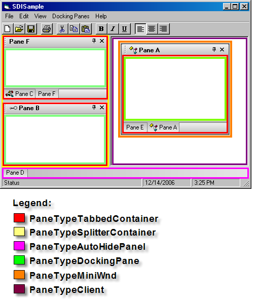

DockingPaneType Enumeration
| Xtreme Docking Pane ActiveX Control v15.3 |
Specifies the type of a docking pane container.
| Member | Description |
|---|---|
| PaneTypeDockingPane | Object is a docking pane. This is the actual pane which contains user windows\controls. |
| PaneTypeTabbedContainer | Object is a tabbed container. This is a container that groups panes together and displays a tab strip to switch between panes.
A docking pane will ALWAYS be contained inside a tabbed container, even single panes, which can optionally have the single tab displayed. |
| PaneTypeSplitterContainer | Object is a splitter container. This is a container that groups other containers together using splitters to separate them. |
| PaneTypeMiniWnd | Object is a mini window container. This is a container that contains floating panes. Inside this container there can be tabbed and splitter containers. |
| PaneTypeClient | Object is the client area container. This is a virtual container used for the client space. There will only be one client container. The client container can be hidden using the HideClient property. |
| PaneTypeAutoHidePanel | Object is a auto hide panel container. This is a container that contains the tab buttons of panes that have been un-pinned\auto-hidden. There can be an auto hide panel on the top, left, right and bottom of an application.
Using this container you can determine how many panes have been auto hidden to a particular side of an application. |
| PaneTypeSidePanel | Object is the side panel. SideDocking enables or disabled "Visio" style client edge docking. Side docking can only occur to the inside edges of the client area. When SideDocking is enabled any pane that is dragged to an inside edge of the client area will attempt to "snap" to that inside edge of the client. The pane will "snap" to the inside edge of the client and will leave a margin equal to that specified by SetSideDockingMargin. |
Both the PaneContainer.Type and Pane.Type properties use the flags from the DockingPaneType enumeration to specify which type of container they are.
The PaneContainer class helps you can understand the layout of the panes. The main purpose of the PaneContainer class is to provide information about how panes are grouped, where they are located, if there are any floating panes, how many floating panes, how many auto-hidden panes, which side panes are auto-hidden, where panes are docked, etc.
In the picture you can see 5 pane objects. Containers were used to create this layout. Panes B, D and E are contained in a PaneTypeTabbedContainer. Pane C is contained in another PaneTypeTabbedContainer and both splitter tabbed containers are contained in a PaneTypeSplitterContainer. The important thing to remember is that panes are always contained inside a PaneTypeTabbedContainer.

Using the PaneActionContainer class and the Action event you can determine additional information such as where a pane will be docked and where it was actually docked.
[Pane Containers Sample (Visual Basic)] This sample illustrates how to use pane containers to restrict where panes can be docked in an application.
Private Sub DockingPaneManager_Action(ByVal Action As XtremeDockingPane.DockingPaneAction, ByVal Pane As XtremeDockingPane.IPane, ByVal Container As XtremeDockingPane.IPaneActionContainer, Cancel As Boolean) |
HideClient Property | PaneContainer Object | PaneContainer.Type Property | Pane.Type Property | PaneActionContainer Object | Action Event